Part 1: Shortest Distance from a Point to a Function
Problem Formulation
Given point $(x_0,y_0)$ and curve $y=f(x)$, minimize squared distance:
$$D(x) = (x-x_0)^2 + (f(x)-y_0)^2$$Target function: $f(x) = x^2 + 5$. Query points: $(0,0), (-4,0), (-8,0), (2,0), (6,0)$.
1.1 Analytical Solution
Set $D'(x) = 0$ for $f(x)=x^2+5$ and $y_0=0$:
$$D'(x) = 2(x-x_0) + 2(x^2+5-0)(2x) = 4x^3 + 22x - 2x_0 = 0 \implies 2x^3 + 11x - x_0 = 0$$Step-by-Step Solution for $(-4, 0)$:
- Substitute $x_0 = -4$: $2x^3 + 11x - (-4) = 0 \implies 2x^3 + 11x + 4 = 0$.
- Since $D''(x) = 6x^2 + 11 > 0$, the cubic is strictly increasing with exactly one real root.
- Solving $2x^3 + 11x + 4 = 0$ yields $x^\star \approx -0.355470$.
- Evaluate coordinate: $y^\star = f(-0.355470) = (-0.355470)^2 + 5 = 5.126359$.
- Calculate distance: $d = \sqrt{(-0.355470 - (-4))^2 + (5.126359 - 0)^2} = \sqrt{(3.644530)^2 + (5.126359)^2} = 6.289845$.
Click to view step-by-step solutions for all other points: (0,0), (-8,0), (2,0), (6,0)
Point $(0, 0)$:
- Cubic: $2x^3 + 11x = 0 \implies x(2x^2 + 11) = 0 \implies x^\star = 0$.
- Closest point: $(0, f(0)) = (0, 5)$.
- Distance: $d = \sqrt{(0-0)^2 + (5-0)^2} = 5.000000$.
Point $(-8, 0)$:
- Cubic: $2x^3 + 11x - (-8) = 0 \implies 2x^3 + 11x + 8 = 0 \implies x^\star \approx -0.672078$.
- Closest point: $(-0.672078, (-0.672078)^2 + 5) = (-0.672078, 5.451690)$.
- Distance: $d = \sqrt{(-0.672078 + 8)^2 + (5.451690 - 0)^2} = 9.133420$.
Point $(2, 0)$:
- Cubic: $2x^3 + 11x - 2 = 0 \implies x^\star \approx 0.180745$.
- Closest point: $(0.180745, (0.180745)^2 + 5) = (0.180745, 5.032669)$.
- Distance: $d = \sqrt{(0.180745 - 2)^2 + (5.032669 - 0)^2} = 5.351396$.
Point $(6, 0)$:
- Cubic: $2x^3 + 11x - 6 = 0 \implies x^\star \approx 0.519904$.
- Closest point: $(0.519904, (0.519904)^2 + 5) = (0.519904, 5.270300)$.
- Distance: $d = \sqrt{(0.519904 - 6)^2 + (5.270300 - 0)^2} = 7.603125$.
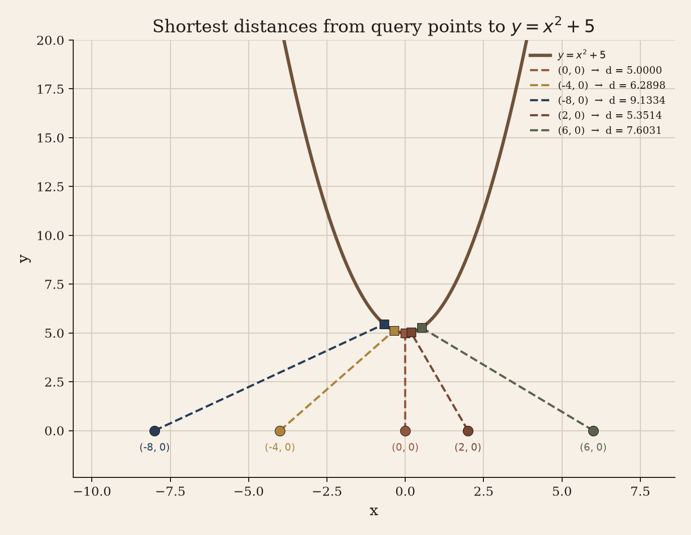
| Point $(x_0,y_0)$ | Stationary Cubic | Root $x^\star$ | Closest Point $(x^\star, y^\star)$ | Distance $d$ |
|---|---|---|---|---|
| (0, 0) | $2x^3+11x=0$ | 0.000000 | (0.000, 5.000) | 5.000000 |
| (−4, 0) | $2x^3+11x+4=0$ | −0.355470 | (−0.355, 5.126) | 6.289845 |
| (−8, 0) | $2x^3+11x+8=0$ | −0.672078 | (−0.672, 5.452) | 9.133420 |
| (2, 0) | $2x^3+11x-2=0$ | 0.180745 | (0.181, 5.033) | 5.351396 |
| (6, 0) | $2x^3+11x-6=0$ | 0.519904 | (0.520, 5.270) | 7.603125 |
1.2 Numerical Approach A: Newton–Raphson Method
Root-finding on $D'(x) = 0$ using update step $x_{k+1} = x_k - \frac{D'(x_k)}{D''(x_k)}$:
$$D'(x) = 4x^3 + 22x - 2x_0, \qquad D''(x) = 12x^2 + 22$$Step-by-Step Iterations for Point $(-4, 0)$ with Initial Guess $x_0 = -2.0$:
- Iteration 1:
$D'(-2.0) = 4(-2)^3 + 22(-2) - 2(-4) = -32 - 44 + 8 = -68$
$D''(-2.0) = 12(-2)^2 + 22 = 48 + 22 = 70$
$x_1 = -2.0 - \frac{-68}{70} = -1.028571$ - Iteration 2:
$D'(-1.028571) = -26.974026, \quad D''(-1.028571) = 34.695510$
$x_2 = -1.028571 - \frac{-26.974026}{34.695510} = -0.481489$ - Iteration 3: $x_3 = -0.481489 - \frac{-3.036063}{24.782012} = -0.358849$
- Iteration 4: $x_4 = -0.358849 - \frac{-0.079207}{23.545190} = -0.355484$
- Iteration 5–6 (Convergence): $x^\star = -0.355470$.
$y^\star = (-0.355470)^2 + 5 = 5.126359 \implies d = \sqrt{(-0.355470 + 4)^2 + (5.126359 - 0)^2} = 6.289845$.
Click to view Newton–Raphson step-by-step for all other points
Point $(0,0)$ [Start $x_0 = 0.0$]:
- $D'(0) = 0, D''(0) = 22 \implies x_1 = 0 - \frac{0}{22} = 0.000000$. Converged in 1 step. $d = 5.000000$.
Point $(-8,0)$ [Start $x_0 = -4.0$]:
- $x_1 = -4.0 - \frac{-328}{214} = -2.467290$
- $x_2 = -2.467290 - \frac{-98.3752}{95.0689} = -1.432478$
- $x_3 = -0.847537 \implies x_4 = -0.686036 \implies \dots \implies x^\star = -0.672078$. $d = 9.133420$.
Point $(2,0)$ [Start $x_0 = 1.0$]:
- $x_1 = 1.0 - \frac{22}{34} = 0.352941$
- $x_2 = 0.352941 - \frac{3.94025}{23.4948} = 0.185220 \implies \dots \implies x^\star = 0.180745$. $d = 5.351396$.
Point $(6,0)$ [Start $x_0 = 3.0$]:
- $x_1 = 3.0 - \frac{162}{130} = 1.753846$
- $x_2 = 1.753846 - \frac{48.0673}{58.9112} = 0.936288 \implies \dots \implies x^\star = 0.519904$. $d = 7.603125$.
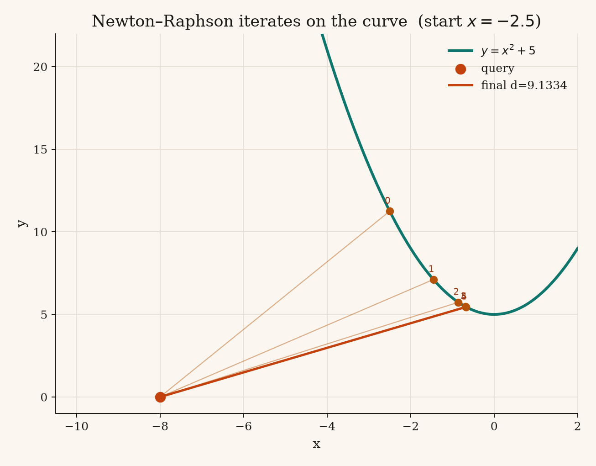
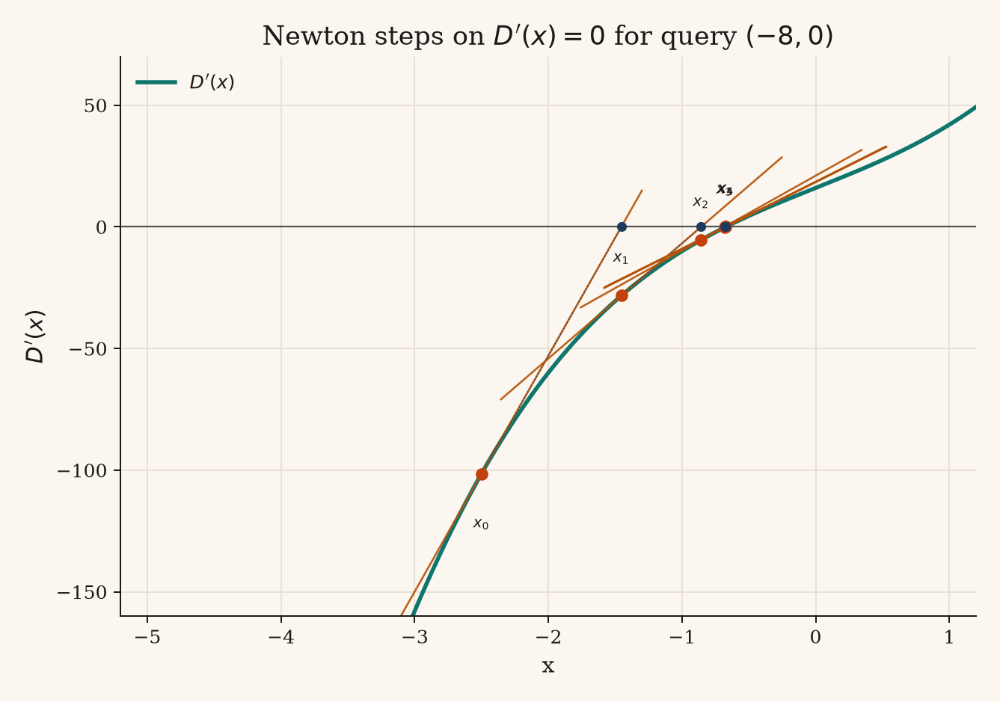
| Point | Start $x_0$ | $x_1$ | $x_2$ | $x_3$ | Final $x^\star$ | Iterations | Distance $d$ |
|---|---|---|---|---|---|---|---|
| (0, 0) | 0.000000 | 0.000000 | — | — | 0.000000 | 1 | 5.000000 |
| (−4, 0) | −2.000000 | −1.028571 | −0.481489 | −0.358849 | −0.355470 | 6 | 6.289845 |
| (−8, 0) | −4.000000 | −2.467290 | −1.432478 | −0.847537 | −0.672078 | 8 | 9.133420 |
| (2, 0) | 1.000000 | 0.352941 | 0.185220 | 0.180747 | 0.180745 | 5 | 5.351396 |
| (6, 0) | 3.000000 | 1.753846 | 0.936288 | 0.570925 | 0.519904 | 7 | 7.603125 |
1.3 Numerical Approach B: Golden Section Search
Direct minimization of $D(x) = (x-x_0)^2 + (x^2+5-y_0)^2$ without using derivatives.
Step-by-Step Algorithm & Iterations for Point $(-4, 0)$:
- Constants: Ratio $\varphi = \frac{1+\sqrt{5}}{2} \approx 1.618034$, $r = 2 - \varphi \approx 0.381966$. Objective: $D(x) = (x+4)^2 + (x^2+5)^2$.
- Initial Bracket ($k=0$): Set $[a, b] = [-19, 11]$.
$x_1 = a + r(b-a) = -19 + 0.381966(30) = -7.541020$
$x_2 = b - r(b-a) = 11 - 0.381966(30) = 2.917961$ - Evaluate Probes:
$D(x_1) = (-7.541020+4)^2 + ((-7.541020)^2+5)^2 = 12.5388 + 3827.6010 = 3840.1398$
$D(x_2) = (2.917961+4)^2 + ((2.917961)^2+5)^2 = 47.8582 + 182.6373 = 230.4955$ - Update Rule: Since $D(x_1) > D(x_2)$, the minimum lies in $[x_1, b]$.
Set $a = x_1 = -7.541020$, retain $x_{1,\text{new}} = x_2 = 2.917961$, recompute $x_{2,\text{new}} = b - r(b-a) = 3.917961$. - Iteration 2 ($k=1$): New bracket $[-7.541020, 11]$. Compare $D(2.917961)$ and $D(3.917961)$. $D(2.917961) < D(3.917961)$, so set $b = 3.917961$.
- Convergence ($k=65$): Bracket shrinks until $|b - a| < 10^{-12}$.
$x^\star = \frac{a+b}{2} \approx -0.355469673$.
$d = \sqrt{D(x^\star)} = 6.289845$.
Click to view Golden Section Search step-by-step brackets for all other points
Point $(0, 0)$ [Initial $[a,b] = [-15, 15]$]:
- $k=0$: Probes $x_1 = -3.541020, x_2 = 3.541020$. $D(x_1) = D(x_2) = 321.328$. Tie rule sets $a = -3.541020$.
- $k=1$: Bracket $[-3.541020, 15]$. $k=65$: $x^\star = 0.000000021 \implies d = 5.000000$.
Point $(-8, 0)$ [Initial $[a,b] = [-23, 7]$]:
- $k=0$: Probes $x_1 = -11.541020, x_2 = -4.458980$. $D(x_1) = 19131.2, D(x_2) = 630.9$. $D(x_1) > D(x_2) \implies a = -11.541020$.
- $k=65$: $x^\star = -0.672078105 \implies d = 9.133420$.
Point $(2, 0)$ [Initial $[a,b] = [-13, 17]$]:
- $k=0$: Probes $x_1 = -1.541020, x_2 = 5.541020$. $D(x_1) = 66.82, D(x_2) = 1290.41$. $D(x_1) < D(x_2) \implies b = 5.541020$.
- $k=65$: $x^\star = 0.180744623 \implies d = 5.351396$.
Point $(6, 0)$ [Initial $[a,b] = [-9, 21]$]:
- $k=0$: Probes $x_1 = 2.458980, x_2 = 9.541020$. $D(x_1) = 134.81, D(x_2) = 9226.71$. $D(x_1) < D(x_2) \implies b = 9.541020$.
- $k=65$: $x^\star = 0.519903662 \implies d = 7.603125$.
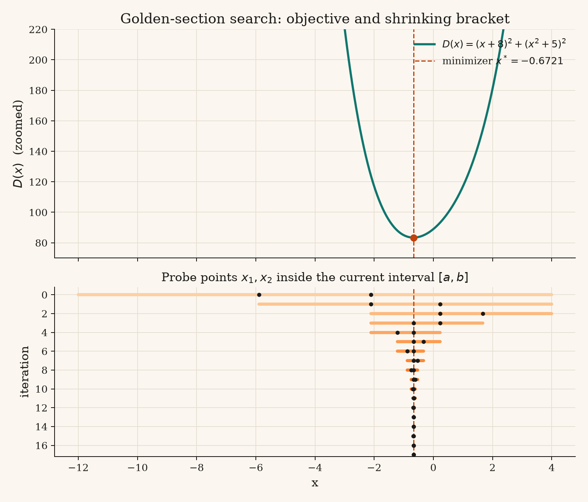
| Point | Initial Bracket $[a, b]$ | Final $x^\star$ | Distance $d$ | Evaluations |
|---|---|---|---|---|
| (0, 0) | [−15, 15] | 0.000000021 | 5.000000 | 65 |
| (−4, 0) | [−19, 11] | −0.355469673 | 6.289845 | 65 |
| (−8, 0) | [−23, 7] | −0.672078105 | 9.133420 | 65 |
| (2, 0) | [−13, 17] | 0.180744623 | 5.351396 | 65 |
| (6, 0) | [−9, 21] | 0.519903662 | 7.603125 | 65 |
1.4 Arbitrary & Non-Polynomial Functions
Extending numerical procedures to arbitrary curves $y=f(x)$:
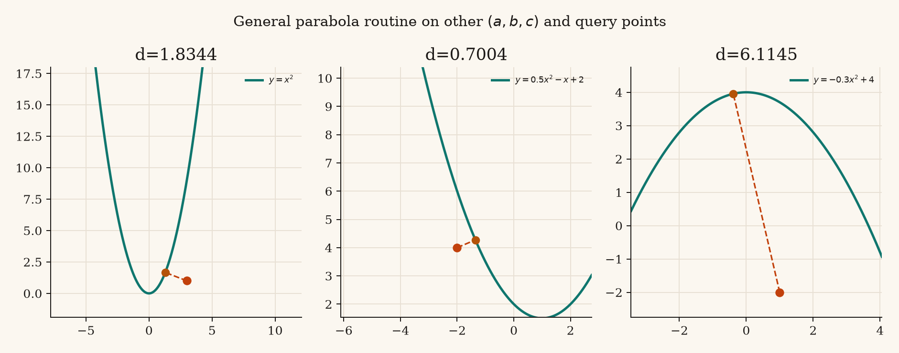
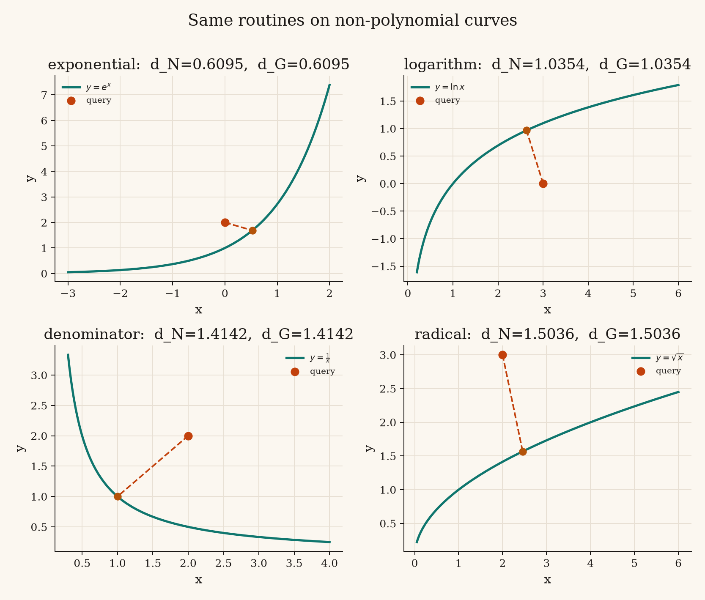
| Function $f(x)$ | Query $(x_0,y_0)$ | Derivatives Used ($f', f''$) | Closest $x^\star$ | Min Distance $d$ |
|---|---|---|---|---|
| $e^x$ | (0, 2) | $f'=e^x, f''=e^x$ | 0.524480 | 0.609459 |
| $\ln x$ | (3, 0) | $f'=1/x, f''=-1/x^2$ | 2.632315 | 1.035351 |
| $1/x$ | (2, 2) | $f'=-1/x^2, f''=2/x^3$ | 1.000000 | 1.414214 |
| $\sqrt{x}$ | (2, 3) | $f'=1/(2\sqrt{x}), f''=-1/(4x^{3/2})$ | 2.456957 | 1.503648 |
Part 2: Function Fitting by Minimizing MSE
Problem Formulation
Fit models to dataset: $(0, 0.5), (1, 1.5), (2, 3.5), (3, 7.5)$.
$$\mathrm{MSE}_{\text{line}}(m,b) = \frac{1}{4}\sum_{i=1}^4 (y_i - (mx_i + b))^2$$ $$\mathrm{MSE}_{\text{parabola}}(a,b,c) = \frac{1}{4}\sum_{i=1}^4 (y_i - (ax_i^2 + bx_i + c))^2$$2.1 Analytical Normal Equations Solution
To find the optimal parameters analytically, we derive the normal equations by taking partial derivatives of the Mean Squared Error ($\mathrm{MSE}$) with respect to each parameter and setting them equal to zero.
1. Summary Statistics of the Dataset ($N=4$):
$$\begin{aligned} \sum x_i &= 0 + 1 + 2 + 3 = 6 \\ \sum y_i &= 0.5 + 1.5 + 3.5 + 7.5 = 13 \\ \sum x_i^2 &= 0^2 + 1^2 + 2^2 + 3^2 = 0 + 1 + 4 + 9 = 14 \\ \sum x_i^3 &= 0^3 + 1^3 + 2^3 + 3^3 = 0 + 1 + 8 + 27 = 36 \\ \sum x_i^4 &= 0^4 + 1^4 + 2^4 + 3^4 = 0 + 1 + 16 + 81 = 98 \\ \sum x_i y_i &= (0)(0.5) + (1)(1.5) + (2)(3.5) + (3)(7.5) = 0 + 1.5 + 7.0 + 22.5 = 31 \\ \sum x_i^2 y_i &= (0^2)(0.5) + (1^2)(1.5) + (2^2)(3.5) + (3^2)(7.5) = 0 + 1.5 + 14.0 + 67.5 = 83 \end{aligned}$$Step-by-Step Solution for Linear Model ($y = mx + b$):
- Derive Equations from Partial Derivatives:
Setting $\frac{\partial \mathrm{MSE}}{\partial m} = 0$ and $\frac{\partial \mathrm{MSE}}{\partial b} = 0$ yields the system of 2 linear equations: $$\begin{cases} m \sum x_i^2 + b \sum x_i = \sum x_i y_i \\ m \sum x_i + b N = \sum y_i \end{cases}$$ - Substitute Known Summations: $$\begin{cases} 14m + 6b = 31 & \text{--- (Eq. 1)} \\ 6m + 4b = 13 & \text{--- (Eq. 2)} \end{cases}$$
- Solve System via Substitution / Elimination:
From Eq. 2, express $b$ in terms of $m$: $$4b = 13 - 6m \implies b = 3.25 - 1.5m$$ Substitute $b$ into Eq. 1: $$14m + 6(3.25 - 1.5m) = 31$$ $$14m + 19.5 - 9m = 31$$ $$5m = 11.5 \implies \mathbf{m = 2.3}$$ Solve for $b$: $$b = 3.25 - 1.5(2.3) = 3.25 - 3.45 = \mathbf{-0.2}$$ Optimal linear model: $\mathbf{y = 2.3x - 0.2}$. - Compute Residuals and Minimum MSE:
Predictions $\hat{y}_i = 2.3x_i - 0.2 \implies \hat{\mathbf{y}} = [-0.2, 2.1, 4.4, 6.7]$.
Residuals $(y_i - \hat{y}_i) = [0.7, -0.6, -0.9, 0.8]$.
$$\mathrm{MSE}_{\text{line}} = \frac{1}{4}\left((0.7)^2 + (-0.6)^2 + (-0.9)^2 + (0.8)^2\right) = \frac{0.49 + 0.36 + 0.81 + 0.64}{4} = \mathbf{0.5750}$$
Step-by-Step Solution for Parabolic Model ($y = ax^2 + bx + c$):
- Derive System of Normal Equations:
Setting $\frac{\partial \mathrm{MSE}}{\partial a} = 0$, $\frac{\partial \mathrm{MSE}}{\partial b} = 0$, and $\frac{\partial \mathrm{MSE}}{\partial c} = 0$ yields 3 simultaneous equations: $$\begin{cases} a \sum x_i^4 + b \sum x_i^3 + c \sum x_i^2 = \sum x_i^2 y_i \\ a \sum x_i^3 + b \sum x_i^2 + c \sum x_i = \sum x_i y_i \\ a \sum x_i^2 + b \sum x_i + c N = \sum y_i \end{cases}$$ - Substitute Known Summations: $$\begin{cases} 98a + 36b + 14c = 83 & \text{--- (Eq. 1)} \\ 36a + 14b + 6c = 31 & \text{--- (Eq. 2)} \\ 14a + 6b + 4c = 13 & \text{--- (Eq. 3)} \end{cases}$$
- Algebraic Elimination:
Multiply Eq. 3 by 1.5 to align $c$ coefficients: $$21a + 9b + 6c = 19.5 \quad \text{--- (Eq. 3b)}$$ Subtract Eq. 3b from Eq. 2 to eliminate $c$: $$(36a - 21a) + (14b - 9b) = 31 - 19.5 \implies 15a + 5b = 11.5 \quad \text{--- (Eq. 4)}$$ Multiply Eq. 3 by 3.5 to align $c$ coefficients with Eq. 1: $$49a + 21b + 14c = 45.5 \quad \text{--- (Eq. 3c)}$$ Subtract Eq. 3c from Eq. 1 to eliminate $c$: $$(98a - 49a) + (36b - 21b) = 83 - 45.5 \implies 49a + 15b = 37.5 \quad \text{--- (Eq. 5)}$$ Multiply Eq. 4 by 3: $$45a + 15b = 34.5 \quad \text{--- (Eq. 4b)}$$ Subtract Eq. 4b from Eq. 5 to solve for $a$: $$4a = 3.0 \implies \mathbf{a = 0.75}$$ Substitute $a = 0.75$ back into Eq. 4: $$15(0.75) + 5b = 11.5 \implies 11.25 + 5b = 11.5 \implies 5b = 0.25 \implies \mathbf{b = 0.05}$$ Substitute $a = 0.75$ and $b = 0.05$ into Eq. 3: $$14(0.75) + 6(0.05) + 4c = 13 \implies 10.5 + 0.3 + 4c = 13 \implies 4c = 2.2 \implies \mathbf{c = 0.55}$$ Optimal parabolic model: $\mathbf{y = 0.75x^2 + 0.05x + 0.55}$. - Compute Residuals and Minimum MSE:
Predictions $\hat{y}_i = 0.75x_i^2 + 0.05x_i + 0.55 \implies \hat{\mathbf{y}} = [0.55, 1.35, 3.65, 7.45]$.
Residuals $(y_i - \hat{y}_i) = [-0.05, 0.15, -0.15, 0.05]$.
$$\mathrm{MSE}_{\text{parabola}} = \frac{1}{4}\left((-0.05)^2 + (0.15)^2 + (-0.15)^2 + (0.05)^2\right) = \frac{0.0025 + 0.0225 + 0.0225 + 0.0025}{4} = \mathbf{0.0125}$$
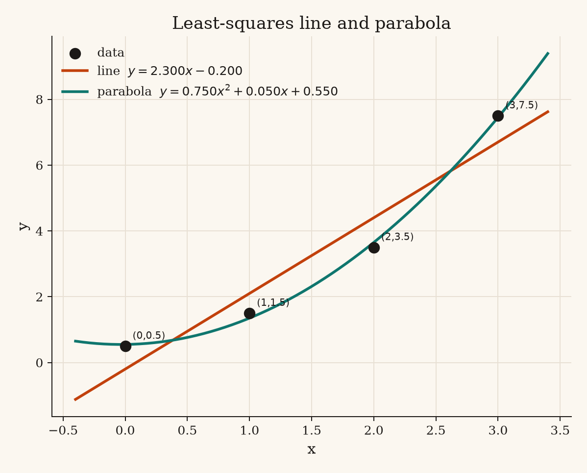
2.2 Coordinate-Wise Newton–Raphson Method
Alternating single-parameter updates: $\theta_{k+1} = \theta_k - \frac{\partial \mathrm{MSE} / \partial \theta}{\partial^2 \mathrm{MSE} / \partial \theta^2}$.
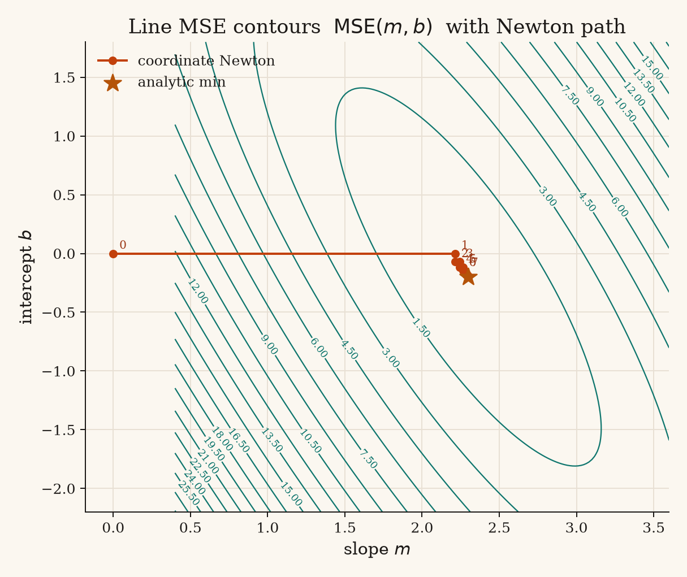
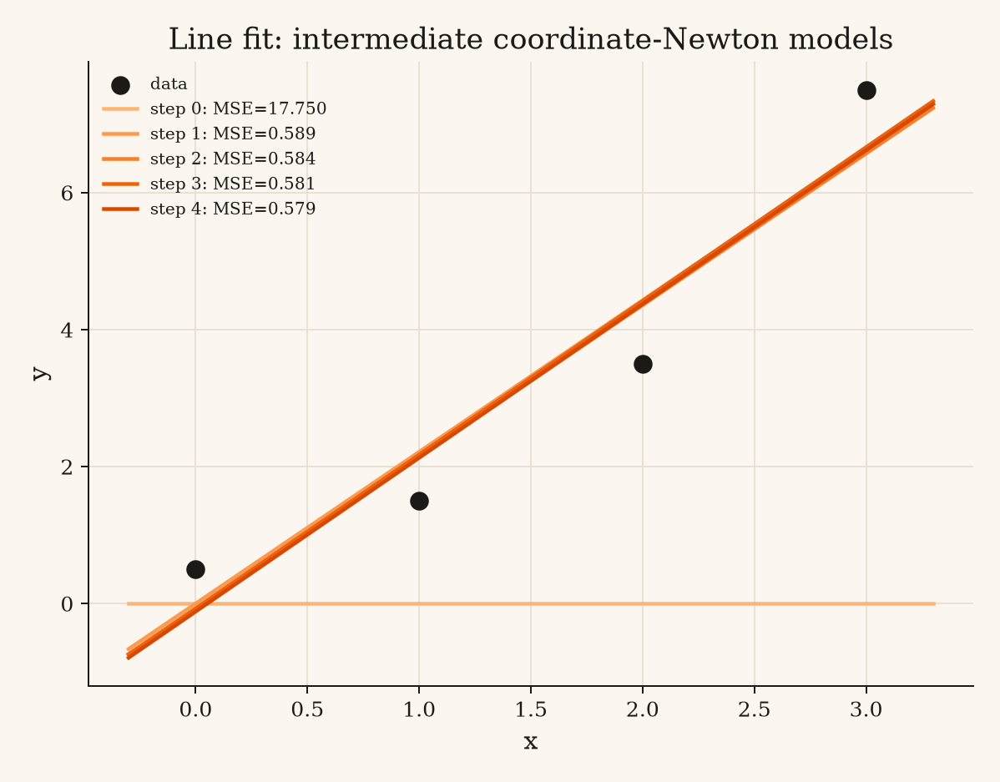
Linear Optimization Steps (Initial Start $m_0=0, b_0=0$):
- Step 1 (Update $m$): $\frac{\partial \text{MSE}}{\partial m} = -15.5, \; \frac{\partial^2 \text{MSE}}{\partial m^2} = 7 \implies m_1 = 0 - \frac{-15.5}{7} = 2.214286 \quad (\text{MSE} = 0.589286)$
- Step 2 (Update $b$): $\frac{\partial \text{MSE}}{\partial b} = 0.142857, \; \frac{\partial^2 \text{MSE}}{\partial b^2} = 2 \implies b_1 = 0 - \frac{0.142857}{2} = -0.071429 \quad (\text{MSE} = 0.584184)$
- Subsequent iterations alternate $m \to b$ converging to $(2.3, -0.2)$.
| Step | Updated Param | $m$ | $b$ | Current MSE |
|---|---|---|---|---|
| 0 | Initialization | 0.000000 | 0.000000 | 17.750000 |
| 1 | $m$ | 2.214286 | 0.000000 | 0.589286 |
| 2 | $b$ | 2.214286 | −0.071429 | 0.584184 |
| 3 | $m$ | 2.244898 | −0.071429 | 0.580904 |
| 4 | $b$ | 2.244898 | −0.117347 | 0.578795 |
| Analytical | Exact | 2.300000 | −0.200000 | 0.575000 |
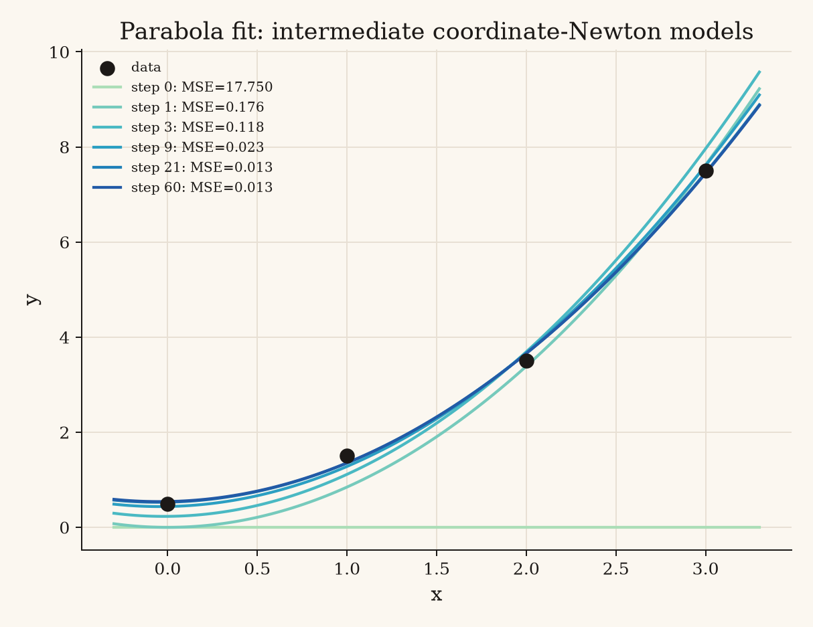
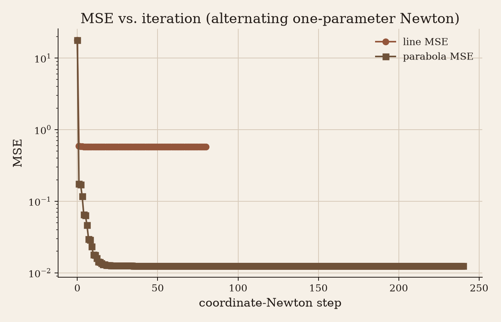
Final Results Summary
- Optimal Linear Model: $y = 2.3x - 0.2$ | Optimal MSE: $0.5750$
- Optimal Parabolic Model: $y = 0.75x^2 + 0.05x + 0.55$ | Optimal MSE: $0.0125$
Code Implementations
- distance.py — Optimization algorithms (Newton-Raphson & Golden Section) for point-to-curve distance.
- fitting.py — Analytical linear system solvers and coordinate-wise Newton optimizer for MSE.
- generate_figures.py — Plotting script generating step visualizations.